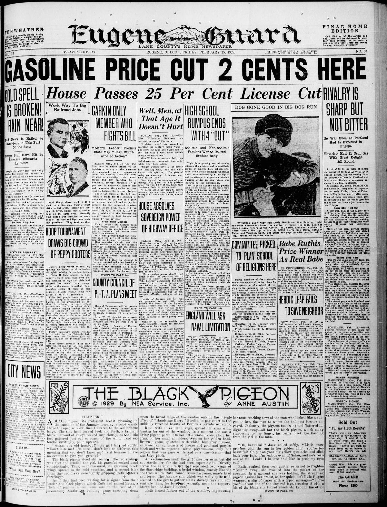

HN-462: Seven killed in Chicago gang massacre
HN HN-462 · February 15, 1929 · Crime, Law & Justice > Murders & Assassinations > Mass killings
Recorded finding
Discovery narrative
Source: Decatur Daily Democrat, p. 8 — original page.
Report: In the aftermath of the St. Valentine's Day Massacre, the paper described seven men shot in a Chicago gangland garage and the fear among those involved in the illegal liquor trade. It discussed witness accounts of supposed police-like assailants.
Assessment: The February 14 killings of seven victims are established, but the account's immediate theories about perpetrator identity, police disguise, and gangster responsibility were investigative leads, not proven convictions. The later suspicion in
Identity-review candidate peers: HN-463:Algorithmic
Original archive images (2)
Authentic images retrieved from Historic Oregon Newspapers (University of Oregon). Article crops are located using the archive's own OCR word coordinates and rendered at native crop resolution; article clips are assembled from the archive's own article-block images; page scans are reduced-size access renditions. No images were generated, mocked, or retouched.

Historic Oregon Newspapers (University of Oregon)
Open larger view · Archive viewer (full resolution)

Historic Oregon Newspapers (University of Oregon)
Open larger view · Archive viewer (full resolution)
Source acquisition
Not yet acquired. Queued for provider-specific acquisition testing (see source-acquisition manifest).
Original seed
URL (preserved verbatim): https://newspapers.library.in.gov/?a=d&d=DCDD19290215.1.8
Saved research report: Historical_Newspaper_Event_Research_453-477_2026-10-23.md
Evidence note: A newspaper report means a historical publication made a claim; it does not establish that claim as fact. Contemporary reporting is separated from later scholarly context and our own assessment.